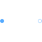
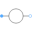
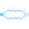

OnePort |

|
Connectors (2)
| plug_p |
Type: PositivePlug Description: Positive quasi-static polyphase plug |
|
|---|---|---|
| plug_n |
Type: NegativePlug Description: Negative quasi-static polyphase plug |
Components (2)
| v |
Type: ComplexVoltage[m] Description: Complex voltage |
|
|---|---|---|
| i |
Type: ComplexCurrent[m] Description: Complex current |
Extended by (4)
|
Modelica.Magnetic.QuasiStatic.FundamentalWave.Losses
Model of stray load losses dependent on current and speed |
|
|  |
Modelica.Electrical.QuasiStationary.MultiPhase.Interfaces
Partial of voltage or current source with reference input |
|
Modelica.Electrical.QuasiStationary.MultiPhase.Interfaces
Partial voltage / current source |
|
|  |
Modelica.Electrical.QuasiStationary.MultiPhase.Basic
Linear mutual inductor |